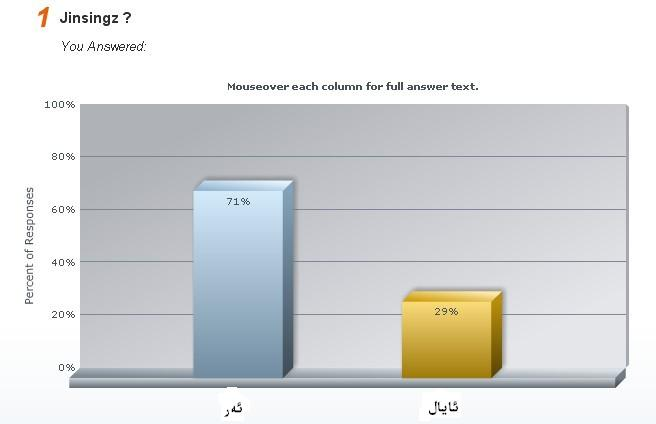
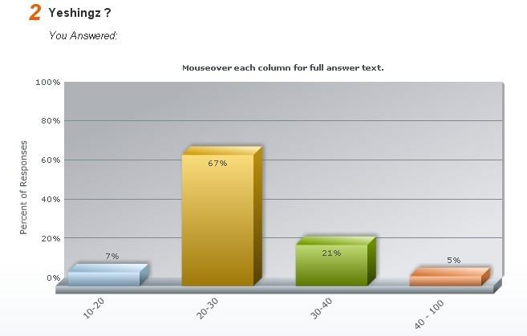
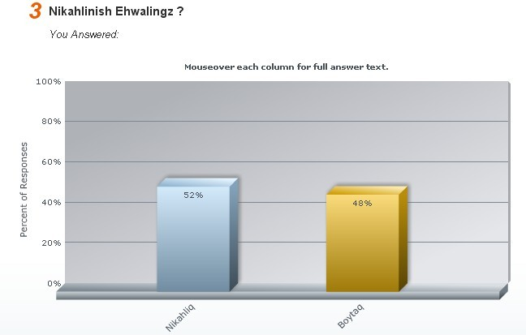
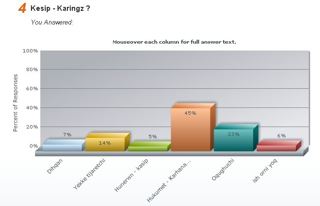
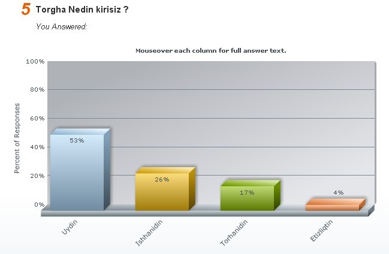
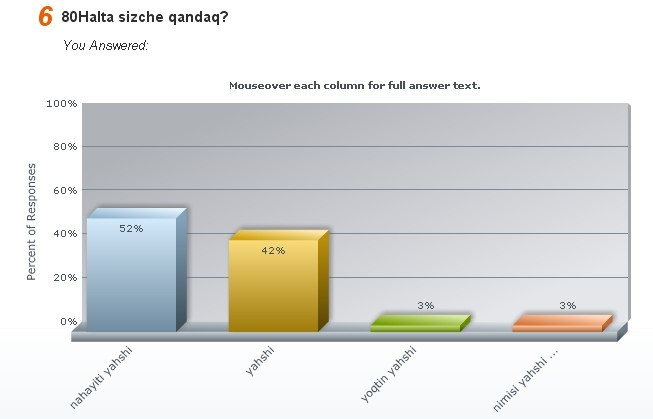
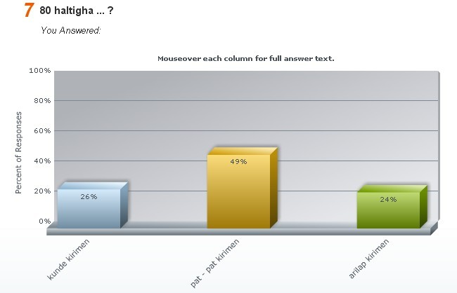

ئالدىنقى يازما
ئالدىنقى يازما كېيىنكى يازما
كېيىنكى يازما
80خالتا بلوگىغا كىملەر كىرىدۇ؟
ئاپتور:Birzat ۋاقتى:2010-08-10


80خالتا بلوگى قۇرۇلغان ئۈچ يىرىم يىلدىن ھازىرغىچە بولغان جەرياندا كەڭ تورداشلارنىڭ قىزغىن قوللاپ-قۇۋەتلىشىگە ئىرىشىپ كەلدى. بىز بۇ تېما ئىتىبارى بىلەن كەڭ ئوقۇرمەنلىرىمىزگە چىن كۆڭلىمىزدىن رەھمەت ئېيتىمىز!! سىلەرنىڭ قوللىشىڭلار بىزگە تېخىمۇ زور ئىلھام بولغۇسى. كەڭ تورداشلارغا يەنىمۇ ئەمەلىي نەپ بەرگۈدەك ياخشى مۇلازىمەت قىلىش مەقسىتىدە 80خالتا بلوگىمىز ئوقۇرمەنلىرىگە ئائىت بەزى ئۇچۇرلارنى سىتاستىكا قىلىپ بۇندىن كىيىنكى بلوگ تەرەققىياتىمىزدا ئاساس قىلايلى دېگەن مەقسەتتە راي سىناش ئىلىپ بارغان ئىدۇق. بۇ پائالىيەتكە جەمئىي 234 نەپەر تورداش ئاۋاز قوشتى. نەتىجە مۇنداق چىقتى:
1. زىيارەتچىلەر قوشۇنىمىزنىڭ جىنسىي ئايرىمىسىدا ئەر 79%، ئايال21% بولدى. بۇنىڭدىن بلوگىمىز ئوقۇرمەنلىرىدىن ئەرلەرنىڭ ئاياللاردىن كۆپ نىسبەتنى ئىگەللەيدىغانلىقى مەلۇم بولدى. قارىغاندا بىز بۇندىن كىيىن ئاز نىسبەتنى ئىگەللىگەن ئايال تورداشلار زۆرۈر ئىھتىياجلىق تېمىلار ھەققىدە كۆپرەك باش قاتۇرۇشقا ھەرىكەت قىلساق بولغۇدەك. كۆپ نىسبەتنى ئىگەللىگەن ئەر تورداشلارنىڭمۇ بىزدىن كۈتكەن تەلەپلىرىنىمۇ ئىشقا ئاشۇرۇشقا سەل قارىمايمىز، ئىنشائاللا!!

2. 80خالتا بلوگ ئوقۇرمەنلىرىنىڭ ياش قۇرامى: 10`20 ئارلىقىدا بولغانلار 7% ؛ 20`30 ئارلىقىدا بولغانلار 67%؛ 30`40 ياشقىچە بولغانلار 21%؛ 40`100 ياشقىچە بولغان ئوقۇرمەنلىرىمىز 5% بولغان. بۇنىڭدا 80خالتا بلوگىنىڭ خاس 20 ياشتىن 30 ياشقىچە بولغان ياشلارغا مەركەزلىشىپ قالغانلىقى، ئوتتۇرا ۋە چوڭ ياشتىكىلەرنىڭ ئىھتىياج-تەلەپلىرىگە سەل قارىغانلىقىمىزنى بىلىۋالدۇق.

3.تورداشلارنىڭ نىكاھلىنىش ئەھۋالىدا تۇرمۇش قۇرغانلار 52%، بويتاقلار 48% بولغان. بلوگىمىز ئوقۇرمەنلىرىنىڭ تۇرمۇشنىڭ ئاچچىق-چۈچۈگىنى تېتىپ باققانلارمۇ ، تۇرمۇشقا ھەۋەس قىلىپ تىلىنى تامشىتىپ يۈرگەنلەرمۇ ئاساسەن تەڭ نىسبەتنى ئىگەللەيدىكەن.

4.تورداشلارنىڭ كەسىپ ئايرىمىسىدا دىھقان 7%، ھۈنەرۋەن-كاسىپ 5%، يەككە تىجارەتچى 14%، ئوقۇغۇچى 23%، ئىش ئورنى يوقلار 6%، ھۆكۈمەت-كارخانا خادىملىرى 45% بولغان.

5. 80خالتا بلوگىنى زىيارەت قىلىدىغانلار: ئۆيدىن تورغا چىقىدىغانلار 53 %، ئىشخانىدىن چىقىدىغانلار 26%، تورخانىدىن چىقىدىغانلار 17%، ئېتىزلىقتىن تورغا چىقىدىغانلار 4% بولغان ( بەلكىم باي دىھقانلار ئېتىزلىقتا ئولتۇرۇپلا 80خالتا بلوگىنى يانپىيوتۇردا زىيارەت قىلغان بولسا كېرەك) [s:13]

6. 80خالتا بلوگى سىزچە قانداق دېگەن سۇئالغا 52% ئوقۇرمەن <<ناھايىتى ياخشى>> دەپ جاۋاب بەرگەن، 42% ئوقۇرمەن <<ياخشى>> دېگەن. 3% تورداش <<يوقتىن ياخشى>> دېگەن. يەنە 3% تورداش ئوچۇق كۆڭۈللۈك بىلەن << نېمىسى ياخشى>> دېگەن. بىز بۇنىڭدىن ماختاشلاردىن مەس بولۇپ كەتمەي كەمتەر بولۇپ داۋاملىق يېتەرسىزلىكلىرىمىز ھەققىدە ئىزدىنىشىمىزنىڭ زۆرۈرلىكىنى تونۇپ يەتتۇق.

7. 80خالتا بلوگىغا 26% ئوقۇرمەن <<كۈندە كىرىمەن>>. 49% ئوقۇرمەن <<پات-پات كىرىمەن>>، 24% ئوقۇرمەن << ئارىلاپ كىرىمەن>> دەپ بىلەت تاشلىغان.

80خالتا بلوگى ئۆزىگە خاس تەرەققىيات نىشانى بىلەن ئاۋام رايىنىڭ كىسىشكەن جايىنى بايقاپ كۆپچىلىك ئوقۇرمەنلىرىمىزگە ھەقىقى، ئەمەلىي نەپ تېگىدىغان پايدىلىق ئەمگەكلىرىمىز بىلەن بەجاندىل خىزمەت قىلغايمىز. ئەھلى جامائەتنىڭ 80خالتا بلوگىنى داۋاملىق قوللاپ-قۇۋۋەتلەپ بىرىشىنى تۆۋەنچىلىك بىلەن سورايمىز! بلوگىمىز ھەققىدە باشقا تەكلىپ-پىكىرلەر بولسا مۇشۇ تېمىغا ئىنكاس قالدۇرۇپ قويۇشىنى ئۈمۈد قىلىمىز!
تورداشلارغا رەھمەت!

 يازما مەنبەسى: بېكەت ئەسىرى
يازما مەنبەسى: بېكەت ئەسىرى خەتكۈش: 80خالتا
خەتكۈش: 80خالتا  مۇناسىۋەتلىك يازمىلار:
مۇناسىۋەتلىك يازمىلار:
 قايتۇرما
قايتۇرما ]
]مەزكۈر بېلوگنى ھازىرقى كۆپ قىسىم توربىكەتلەرگە سېلىشتۇرغاندا ھەقىقەتەنمۇ كىشىنى سۆيۈندۈرىدۇ.
بەلكىم نۇرغۇن تورداشلىرىمىزغا ئايان بولۇشى مۇمكىن ، كۆپلىگەن ئۇيغۇر تور بىكەتلىرى سۈپەت ھەم مەزمۇن جەھەتتىن بەكمۇ ، ناچارلىشىپ كېتىۋاتىدۇ ، ئاساسى جەھەتتىن خەلقىمىزگە پايدىسى يوق دىيەرلىك.
مەزكۇر بېلوگنىڭ تېمىلرى ھازىر سەل ئازلاپ قېلىۋاتىدۇ ، بىراق بۇئەھۋاللارمۇ چوقۇم ياخشىلىنىپ كېتىدۇ.
بىلوگنىڭ مەسلىھەت سوراش رايونى ئەسلىگە كەلتۈرۈلگەن بولسا تىخىمۇ ياخشى بولاتتى.
ئۇلۇغ ئاللا بىرزات ئەپەندىنىڭ تىننى ساغلام ، ھەممە ئىشلىرىنى ئوڭۇشلۇق قىلغاي......
مىنىڭ بىر ئوغلۇم بار، 13 ئايلىق بولدى. ئوغلۇم تۇغۇلغاندىن كىيىن ئۆزۈم خىزمەتتىن توختاپ ناھايىتى تەرتىپلىك باققان ئىدىم. ئۇنى بىر ياشقىچە ئىمىتتىم. ئۈچ ئايلىقتىن باشلاپ ئاز مىقتاردا بەزى قوشۇمچە يىمەكلىكلەرنى بەردىم. ئالتە ئايلىقتىن باشلاپ ئۆزىمىز يەيدىغان يىنىك ئۇيغۇرچە تاماقلاردىن يىگۈزدۇم. بۇ جەرياندا باشتىن ئاخىر ئىشتىھاسى ياخشى ئىدى. ئۆزىمۇ ناھايىتى ساغلام ۋە بۇدرۇق چوڭ بولغان ئىدى. لىكىن بىر ئايدىن بىرى ئىشتىھاسى بارغانسىرى ناچارلاپ، ھازىر كالا سۈتىدىن باشقا ھىچ نەرسىنى ئاغزىغا ئالمايۋاتىدۇ. ئورۇقلاپمۇ كەتتى. ئىككى ھەپتە بولدى، يەسلىگە بىرىشكە باشلىغان. يەسلىدىمۇ ھىچنىمە يىگىلى ئۇنىمايدىكەن. يىقىندا زۇكام بولۇپ ساقايدى. كەيپىياتىمۇ بۇرۇنقىدەك ئوچۇق يورۇق ئەمەس.دۇختۇرغا ئاپارسام مىجەزى بولمىغاچقا ئىشتىھاسى ياخشى ئەمەس دەپلا تۈگەتتى......لىكىن بالام ئاغرىپ قىلىشتىن بۇرۇنلا ئىشتىھاسى تۇتۇلۇشقا باشلىغان. سىزچە بۇنىڭدا باشقىچە بىرەر سەۋەب بارمىدۇ....مەن نورۋىگىيەدە ياشايمەن. بۇ يەردە ئالاھىدە دورىلىق ماتىرىياللارنى تاپمىقىم تەس، لىكىن ئائىلىدە ئادەتتىكى ماتىرىياللار بىلەن تەييارلىغىلى بولىدىغان بىرەر رىتسىپلار بارمىدۇ....بىر مەسلىھەت بەرگەن بولسىڭىز...ئاللاھ سىزدىن رازى بولسۇن...
كىشى ۆزىنىڭ مىجەزىنى بىلىشتىكى ەڭ ادى يوللار قايسىلار .............. ەجىرڭىزنى االە بەرسۇن .
تېرىشىڭ، توختاپقالماي تىرىشڭ!!!!!!!!
ئەمدى بىر قىسىم يىېتەرسىزلىكلەر ياق ...ياق.. بىرقىسىم ئويلىغانلىرىمنى دەپ باقاي بولسا مەخسۇس مەسلەھەت سۇراش ئورنى ياساپ كۆزگە چېلىقىدىغان ئورۇنغا ئۇلىنىش قىلىپ قويسىڭىز گەپنىڭ بېلىغا تىپىپ مەسلەھەت سورايدىغانلاردىن ساقلانساق ، بۇ توربەتنىڭ سىتىمىلىق، ئەتىراپلىق ، چىرايلىق تۇرۇشى ئۇچۇن پايدىلىق.
يەنە سۇئاللارنىڭ قايتا قايتا سۇرىلىشى ياكى ئوخشاش كىسەللىكلەر توغرىسىدىكى سۇئاللارنىڭ يەنە ئوخشاش سورىلىپ قېلىشىدىن ساقلىنىش، سىزنىڭ ۋاقتىڭىزنىڭ تىجىلىپ قېلىشى ئۇچۇن كۆپ سورىلىدىغان ۋە كۆپ سورالغان بىر قسىم كىسەللىك مىسالى ، مەسلىھەت قاتارلىقلارنى تاللانما قىلىپ ‹‹كۆپ كۆرۇلگەن تىما››ياكى‹‹ئاۋات تىما››نامىدا بىر بۇلۇڭغا چىقىرىپ قويسىڭىز ئوخشاش شەكىلدىكى جنسى كىسەللىكلەر ۋە روھى كىسەللىكلەرگە قايتا قايتا مەسلىھەت بىرىشتىن ساقلانغىلى بۇلاتتى.
بولسا ھەرقايسى بۇلۇملەرگە ئايرىپ تىما رايۇنى پەيدا قىلسىڭىز ، بۇ توربەتنى چوڭ بىرتور دوختۇرخانىسى قىلىپ ھەر قايسى بۇلۇملەر بويىچە كىسەل كۇرۇش ،مەسلىھەت بىرىشنى يولغا قويسىڭىز تېخىمۇ سىتىمىلىق مۇكەممەل بولمايدۇ، بۇنىڭ ئۇچۇن ئۆزىڭىزنىڭ يېقىن كەسىپتاشلىرىڭىزنى چاقىرسىڭىز ئۇلار ئۆز ئالاھدىكى بويىچە ھەرقايسى بۇلۇملەرنىڭ بۇلۇم مۇدىرلىقىنى ئۇستىگە ئالسا(تور دوختۇرخانىسىنىڭ جۇما) دىگەنلەرنى ئويلىدىم.
ئەركاندىن تاققۇ تۇققۇلار..............
ئەمما ئاخىرقى تەكلىپىڭىز (تور دوختۇرخانىسى) غا كەلسەك <<قالپاققا چۇشلۇق قىرغىز يوق >> دېگەندەك مەن ئۆزۈمنى ئۇنچە كاتتا ئىشنىڭ ھۆددىسىدىن چىقىپ بولالايمەن دەپ قارىمايمەن. بەزىلەر شۇنداق سۇئاللارنى قويۇشتى، سىلى دەسلىپىدە 80خالتا ئۇيغۇر تېبابەت تورى دەپ بىر ئوبدان ماڭدۇرىۋاتقان بىكەتنى 80خالتا بلوگ قىلىپ ئۆزگەرتىپلا ...بۇنداق قىلىش كەينىگە قاراپ چىكىنگەنلىك، سىلى بىزنى ئۈمۈدسىزلەندۈرلە....
تورداشلارنىڭ خەت-ئۇچۇر، تېلفۇنلاردىن شۇنداق بىر خىل ئۈمۈدسىز نەزەردىكى سۇئاللار كىلىپ تۇرۇۋاتىدۇ. ئويلاپ باقسام تور بەتنىڭ تەرەققىياتى، تورداشلارنىڭ ئىھتىياجى مېنىڭ چەكلىم ئىقتىدارىم دائىرىسىدىن ھالقىپ كەتكەن ئىكەن. مەن بىر ياقتىن ئۈگۈنۈپ، بىر ياقتىن ئەمەلىيەتتىن ئۆتكۈزۈپ مىڭىشقا تىرىشقان بولساممۇ يەنىلا تورداشلارنىڭ كۈنسىرى ئىشىپ مېڭىۋاتقان ئىھتىياجىغا يېتىشىپ بولالماي قالدىم. مۇشۇ ساھەدىكى كەسىپداشلار بىلەن ھەمكەرلىق ئورنىتىپ تور بەتنىڭ قىممىتىنى يەنىمۇ يۇقۇرى كۆتۈرۈش نىيىتىم بولسىمۇ ئۆزۈمنىڭ تەشكىللەپ يېتەكچىلىك قىلىش قابىلىيتىمغا نىسبەتەن كۈچلۈك بىر گۇمانىم بولغاچقا ئۇنداق قىلىشقا جۈرئىتىم يار بەرمىدى.
تېبابەت كەسپى ئۇلۇق بىر كەسىپ، بۇ ئۇلۇقلۇقنىڭ ئارقىسىدا ئىنتايىن چوڭ بىر مەسئۇلىيەت، سەمىمىيلىك بار. بۇ مەسئۇلىيەتنى ھەقىقى مەنىسى بىلەن ئۆز ئۈستىگە ئىلىشنى خالايدىغان كىشى خىلى ئېغىر بىسىم ھىس قىلىپ ياشايدىغان گەپ.
بىردەم پاراڭلاشماقچى ئىدىم. ۋاقىت يار بەرمىدى. كىيىن دېيشەرمىز.
مەن تويكىلغىلى 4يىلدەك ۋاكىت بۇلۇپ قالدى ،تويقىلىشنىڭ ئالدىدا 2يىل بۇرۇن ئوزۇمنى تۇتالماي ناشايان ئشقىلىپ قويۇپ سۈزنەك كىسىلىنى يۇقتۇرۋېلىپ داۋالىنىپ ساقايغان .لىكىن بىريىلدىن كىيىن باغچىغا ئوينىغىلى بېرىپ تاش تۈگىدە قاتتىقراق ئولتۇرۇپ ساپتىكەنمەن،تاش بورۈگۈم شۇنداك بىئارام سىزلىنىپ كەتتى ،ھەم بىرنەچچە كۈن تارئىشتاننى كىيىپتىمەن ،شۇئىشتىن كىيىن جىنسى ھىسياتىم ،ئاجىزلاپ قالغاندەك ھىسقىلىپ ،سىلىگە وخشاش بىر تىۋىپ دوستۇم بار بارئىدى ،جىنسى جەھەتتىكى شۇئاجىزلىقىمنى ئۇنىڭغا ئازراقلا دىدىم،(تەپسىلاتىنىئۇنىڭغا ئىنىق دىمىگەن) شۇنىڭ بىلەن ئۇ ماڭا بۈرەك سۇۋۇپ كىتىپتۇ دەپ بىر دورىنى بەرگەن ،ھەم ئوزۇم شۇدورا بىلەن قوشۇپ ھەركۈنى خام تۇخۇم بىلەن ھەسەلنى ئارلاشتۇرۇپ ئىچىپ بىرىپتىمەن ،شۇجەرياندا تاش بۈرۈگۈم ھەم چات ئارلىقىم شۇنداق بىئارامسىزلىنىپ ئاغرىدىغان بۇلۇپ قالدى ، كىيىن دوختۇرغا كورۈندۈم ،كورۈنگەندە مەزى بېزى ياللۇغى دەپ دىئاگۇنۇز قويۇپ داۋالىدى ،داۋالانغاندىن كىيىن كوپ سىيىش ئالامەتلىرى يوقىغان قىنسى ھىسياتىممۇ تەدرىجى ئەسلىگە كەلگەن بولسىمۇ ،لىكىن تاش بورۈگۈمنىڭ بىئاراملىقى يوقىمىدى، كىيىن تويقىلىدىغان بۇپقالدىم ،مەن تويدىن كىيىنكى ئىشلاردىن ئەنسىرەپ نىمە قىلارىمنى بىلمەي تۇرغاندا (مەن ھېلىقى دوستۇم بەرگەن دورىنى يەپلا شۇنداق بۇپقالدىم شۇڭا تىبابەتت دورىلىرىدىن قورقىمە،دوختۇر دورىلىرىنى ئىشلەتسەملا قوزغۇلىدۇ،باشقا ۋاقىتتا كۈچلۈك ئەمەس) لوپنۇر كەندىرىدە ئىشلەنگەن كۇسارنىڭ گىپى تىلىۋىزوردا قۇيۇلدى ،مەن بىرىپ سىتىۋالدىم ،1ئايدىن كىيىن تويقىلدىم ،خۇدايىم ئاسان قىلىپ ھىلىقى كۇسار پايدا قىلدىمۇ ياكى خوتۇنۇم پايدىقىلدىمۇ بىلەلمىدىم ،تويقىلىپ1-2دىن كىيىن ساقىيىپ كەتتىم ،ھازىر 5يىل بولدى ،بالام بار، لىكىن تاش بورۈگۈمنىڭ بىرتەرپى سەل قاتتىقراق تۇتسام بىئارامسىزنلىنىدۇ، مىنىڭچە سەل چوڭ ،قاتتىق سوغۇقتا، ئوزاقراق موتوئىسكىلىت مىنگەن ئوزاق ئولتۇرغان ۋاقىتلاردا سەل بىئارام بولىدۇ،باشقا ۋاقىتلاردا نورمال مەن بۇنداق تۇرىۋىرىپ كىيىن يامان ئاقىۋەتنىڭ كىلىشىدىن قورقىمەن .ئېغىر دىسە ئېغىر ئەمەس ساق دىسە ساق ئەمەس ئوزاق بۇپكەتكەن بۇ كىسەلگە ،قانداق داۋالىنىش ئۈستىدە كوپ باشقاتۇردۇم . سىلىنىڭ بۇتورلىرنى زىيارەت قىلىۋاتقىلى 1يىلدىن ئېشىپتۇ ،ئاخىرى سىلىنىڭ مەسلىھەتلىرى بۇيىچە داۋالىنىپ باقاي دەپ تۇنجى قىتىم بۇتىمىنى يىزىۋاتىمە،ئېغىر كورمەي داۋالاش دورىلىرى ،ۋەمەسلىھەت بىلەن تەمىنلەشلىرىنى ومىت قىلىمەن .
مەن خوتەن-قاراقاشتا، دورىنى پوچتىدىن ئېلىۋالسام،(مەن بۇيىل 28ياش ھاراق ،تاماكا چەكمەيمەن ،6-7يىل ئىلگىركى شۇ ئىشتىن كىيىن ھىچقانداق ناشايان ئىش قىلىپ باقمىدىم)
بۇ بىكەت سېستىمىسىنىڭ خاتالىقى ياكى شۇنداق تەڭشەكلىك بۇلۇشى مۇمكىن.
مەن تىزىملاتمىغان، تىزىملاتقانلار قانداق يوللايدىكىن بىلمىدىم.

80 خالتا بلوگىنىڭ ئالقىش ئىچىدە بىخۇتلاشماي، ئۆزىگە قاتتىق تەلەپ قويۇپ، ئۇيغۇر تېبابەتچىلىكىنى توغرا رەۋىشتە كەڭ ئۇيغۇر تور ئاممىسىغا تەشۋىق قىلىپ، تورداشلارنىڭ ساقلىققا ئالاقىدار تۈرلۈك تۈمەن ھاجەتلىرىنى راۋا قىلىپ، ئۆزىنىڭ ئۇيغۇر تور ساھەسىدىكى قىممىتىنى تېخىمۇ جۇللاندۇرۇشنى ئۈمىد قىلىمىز.